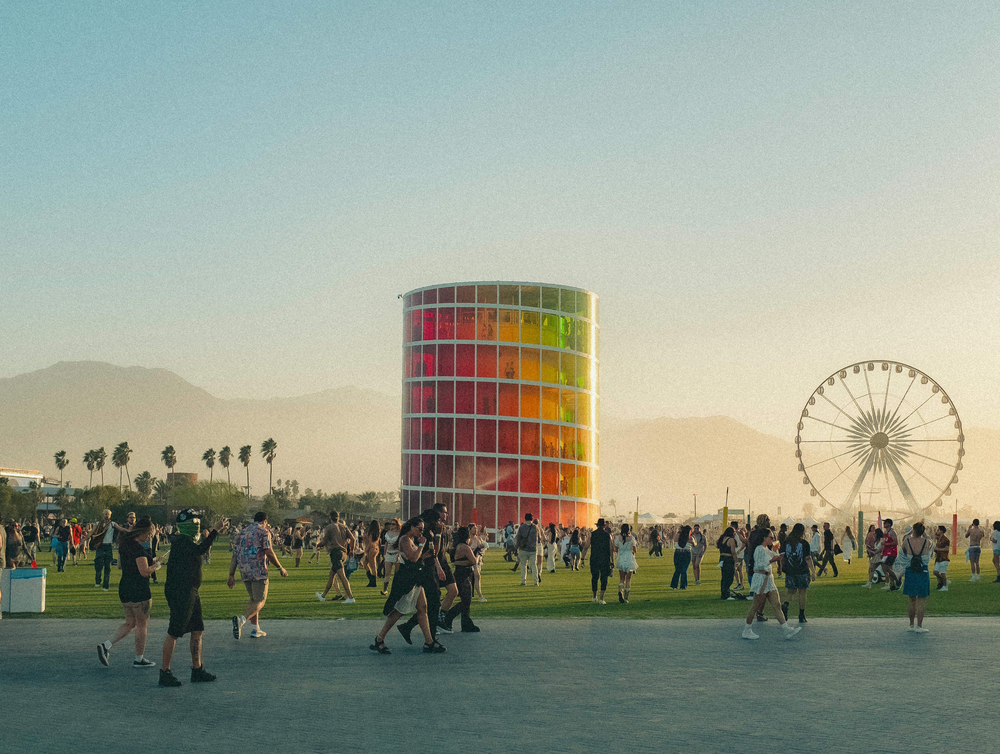
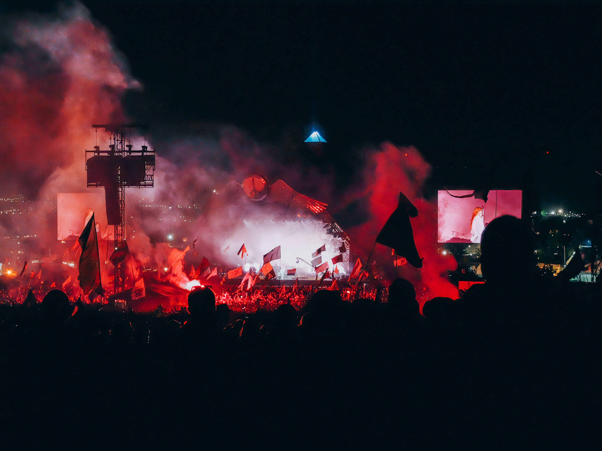
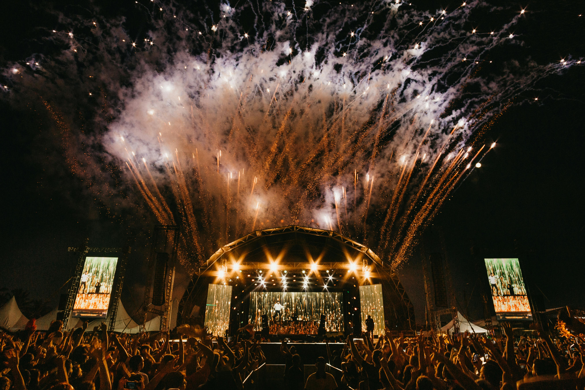

Worldwide Melodies: Unveiling the Globe's Premier Music Festivals
Tomorrowland

Get ready to be carried away on a joyful trip through the world of electronic dance music as we explore the captivating environment of Tomorrowland, the legendary and spectacular music event in Belgium. Tomorrowland is more than just a festival; it's a magical utopia where music, enchantment, and friendship come together to create an experience unlike any other, and it's tucked away in the charming town of Boom. Come along with us as we investigate the rainbow of feelings and experiences that await at Tomorrowland, a place where memories are created and dreams come true to the sound of tunes and beats.
History and Origins:
The origins of Tomorrowland may be found in Boom, Belgium, in 2005, when brothers Manu and Michiel Beers planned the festival's first iteration. From its humble beginnings as an electronic music gathering, it has grown into a worldwide phenomenon that draws tens of thousands of music lovers from all over the world. Tomorrowland's status as the best electronic music festival has been solidified by its reputation for unmatched production value, incredible stage designs, and an elite lineup of DJs.
Festival Experience:
Tomorrowland's enchantment is its capacity to immerse visitors in a world of wonder and imagination, where anything is conceivable and imagination is unrestricted. You'll be met by a kaleidoscope of colors, images, and sounds that excite the soul and ignite the senses as soon as you step foot within the festival grounds. The festival's thrilling acts take place against a surreal backdrop of intricate stage designs, soaring sculptures, and immersive art installations.
With an unmatched lineup of the best DJs and electronic music artists in the world presenting breathtaking sets across numerous stages and genres, music takes center stage at Tomorrowland. With something for every taste and inclination, including tiny subterranean showcases and mainstage headliners, Tomorrowland makes sure that every attendee finds their musical nirvana among the festival's many musical offerings.
Cultural Experiences:
Beyond the music, Tomorrowland provides a plethora of cultural experiences for attendees to savor and explore. With themed flights, train trips, and lodging included, the festival's Global Journey packages enable visitors to take a fantastical trip from places all over the world to the festival grounds. Every year, Tomorrowland also welcomes a wide range of food vendors who tantalize the senses with a mouthwatering assortment of international cuisine to suit every taste.
Furthermore, DreamVille camping at Tomorrowland offers a lively communal setting where guests can meet other music enthusiasts from all over the world. With everything from spontaneous jam sessions and late-night bonfires to yoga classes and health seminars, DreamVille is a cultural melting pot that perfectly captures the spirit of harmony and friendship that characterizes Tomorrowland.
Local Customs and Traditions:
Tomorrowland honors Belgium's rich history and customs while also celebrating the world's electronic music culture. Throughout the festival grounds, local culinary treats including beer, chocolate, and Belgian waffles are on display, giving guests a taste of the gastronomic prowess of the nation. Furthermore, Belgian mythology, history, and folklore are frequently the basis for Tomorrowland's themes and stage names, which infuses some local character into the immersive festival experience.
Conclusion:
Beyond merely being a music festival, Tomorrowland is a life-changing experience that brings people from all walks of life together in a common celebration of magic, music, and community. You'll be taken on a euphoric journey that will never fade from your soul as you dance under the stars and lose yourself in the beat of the music. Come experience the incredible magic of Tomorrowland with us, a place where music is the ultimate medium and dreams come true.
Coachella Valley Music & Arts Festival

At the Coachella Valley Music & Arts Festival, go inside a world where music, art, and culture combine in an explosion of expression and creation. Nestled in the sun-kissed desert of Indio, California, Coachella is more than just a music festival; it's a fashion destination, a cultural phenomenon, and a meeting point for the most important artists and trendsetters in the world. Come along as we discover the spirit of this legendary festival that captures the hearts and minds of music lovers all around the world as we peel back the layers of Coachella's illustrious past, epic lineup, and life-changing events.
History and Origins:
In an effort to highlight alternative and indie music bands in the Southern California desert, event promoter Paul Tollett and his business Goldenvoice created the first Coachella Festival in 1999. Headliners including Beck, Tool, and Rage Against the Machine headlined the first edition, which served as the catalyst for what would eventually become an annual global music festival attended by music lovers from all over the world.
Over the years, Coachella has grown to become one of the biggest and most significant music festivals globally, renowned for its diverse line-up of performers from pop, hip-hop, indie, rock, and electronic music. The festival is known as a trendsetter and tastemaker in the music industry because of its dedication to innovation, creativity, and cultural relevance.
Festival Experience:
What makes Coachella so appealing is that it offers a multi-sensory experience that goes beyond the parameters of conventional music festivals. You'll be engrossed in an immersive world of vivid hues, arresting art installations, and varied performances that awaken the senses and inspire the imagination as soon as you enter the festival grounds.
Coachella features several stages with performances by the biggest musical stars in the world along with up-and-coming performers and hidden gems. The festival's famous Coachella Stage, Sahara Tent, and Outdoor Theatre serve as gathering places for big-name acts and moments that will live on in the memory of everyone who attends.
Beyond the music, Coachella provides a varied assortment of cultural activities, including immersive art installations, interactive sculptures, and multimedia exhibits that blur the limits between art and technology. Showcasing the best of Southern California's thriving food industry, the festival's carefully crafted culinary program features gourmet food trucks, pop-up restaurants, and craft beer gardens that provide a mouthwatering assortment of culinary pleasures to suit every palate.
Cultural Experiences:
In addition to music and visual arts, Coachella offers a plethora of immersive experiences that honor originality, variety, and ingenuity. Inspired by New York's and Chicago's underground dance clubs, the festival's Yuma Tent features DJ sets and avant-garde electronic music acts that extend the party late into the evening.
Professional artists and educators provide classes, craft activities, and group art projects at the Coachella Art Studios, a hands-on creative area for guests to engage in. From jewelry-making and screen-printing to painting and sculpting, the Art Studios offer a space for self-expression and discovery that inspires visitors to embrace their inner creative.
Local Customs and Traditions:
Coachella honors Southern California's rich history and customs while simultaneously celebrating international music and culture. The retro-chic décor, mid-century modern furniture, and desert oasis atmosphere of the festival's Palm Springs-inspired design harken back to the glitz and nostalgia of classic Hollywood.
With an emphasis on sustainably produced, locally sourced products and cutting-edge cooking methods, Coachella's culinary program presents the finest of California cuisine. The festival's wide range of dining options, which include gourmet street cuisine and farm-to-table fare, highlight the region's gastronomic diversity and dedication to eco-conscious living.
Conclusion:
The Coachella Valley Music and Arts Festival is more than simply a music event; it's a creative celebration, a cultural phenomenon, and evidence of the ability of art, music, and community to bring people together from all backgrounds. You will personally feel the transforming power of one of the most famous festivals in the world as you dance in the desert sun, lose yourself in the beat of the music, and take in the rich tapestry of sights and sounds that characterize Coachella. Come celebrate with us the essence of Coachella, where there is always a chance to meet, create, and have amazing experiences.
Glastonbury Festival

As we explore the enchantment and mysticism of the fabled Glastonbury Festival, get ready to travel to the center of England's cultural landscape. Tucked away in Somerset's undulating hills, Glastonbury is more than simply a music festival; it's a symbol of creativity and camaraderie, a rite of passage, and a cultural phenomenon. Come along as we explore the legendary past, diverse lineup, and life-changing moments that epitomize Glastonbury—a place where harmony rules and music transcends all limitations.
History and Origins:
The Glastonbury Festival began in 1970 when a small group of 1,500 music fans got together on a Somerset dairy farm for what would become into one of the most famous music events ever. With performances by influential musicians like T. Rex, David Bowie, and Fairport Convention, Glastonbury evolved as a celebration of music, arts, and community, inspired by the counterculture movement's ethos and the essence of Woodstock.
From its modest beginnings over the years, Glastonbury has grown into a massive extravaganza that draws hundreds of thousands of people from all over the world. The festival has expanded in breadth and size, but it has stuck to its original goals of supporting charity causes, fostering environmental sustainability, and elevating up-and-coming performers.
Festival Experience:
The secret to Glastonbury's enchantment is its capacity to foster a feeling of community and friendship among its wide-ranging patrons. You'll be engulfed in a frenzy of sights, sounds, and experiences that arouse the senses and excite the soul as soon as you step foot on the festival grounds. Glastonbury promises something for everyone with more than a dozen stages showcasing a diverse spectrum of musical styles, from folk and electronic to rock and pop, making sure that every visitor discovers their musical paradise amidst the festival's auditory tapestry.
Glastonbury offers a wide range of artistic and cultural events, such as theatrical plays, spoken word performances, circus acts, and interactive installations, in addition to its amazing roster of musical concerts. The festival is a melting pot of creativity and expression that allows visitors to immerse themselves in the transformational power of art and culture. Activities range from dawn yoga classes and health courses to spontaneous jam sessions and late-night bonfires.
Cultural Experiences:
Glastonbury provides a plethora of cultural opportunities for attendees to delve into and relish. The festival's recognizable Pyramid Stage, with its eye-catching metallic design, is the center of attention for main acts and moments that leave an impression on everyone who sees them. In the meantime, visitors can immerse themselves in fantastical and wonder-filled worlds in the festival's many themed zones, such as Shangri-La, Block9, and The Common.
Glastonbury also honors the rich cultural legacy and customs of England by showcasing regional cuisine across the festival grounds, including Somerset cider, West Country cheeses, and handcrafted pies. Furthermore, the Green Fields section of the event encourages eco-friendly living and environmental sustainability through seminars, debates, and exhibits on subjects including waste minimization, permaculture, and renewable energy.
Local customs and traditions:
Glastonbury honors England's rich history and traditions in addition to celebrating international music and culture. Throughout the course of the weekend, spiritual gatherings, rituals, and ceremonies take place around the festival's famous Stone Circle, an ethereal gathering spot brimming with ancient energy and symbolic meaning. In the meantime, participants looking for harmony and balance amid the celebrations can take advantage of holistic therapies, meditation sessions, and wellness courses at the festival's Healing Fields area, which serves as a haven for rest, contemplation, and renewal.
Conclusion:
Glastonbury Festival is more than simply a music event; it's a cultural phenomenon, an ode to creativity, and evidence of the strength of a sense of community. Glastonbury's transformational magic will be felt directly as you dance under the stars, lose yourself in the beat of the music, and make new friends from all over the world. Come celebrate the iconic festival, where every second is a monument to the enduring power of music, the arts, and culture, and which has captivated the hearts and minds of music lovers for decades.
Roskilde Festival

A cultural trip through the heart of Scandinavia awaits you as we delve into the colorful and diverse world of Roskilde Festival. Since its founding in 1971, this renowned music festival has captivated spectators while being tucked away in the heart of Denmark's ancient city of Roskilde. Roskilde Festival, one of the most prestigious and significant events in Europe, is well-known for its varied program, immersive art installations, and dedication to social engagement. Come explore the past, character, and charm of Roskilde, a place where community spirit is paramount and music crosses all barriers.
History and Origins:
The Roskilde Festival began in the early 1970s when a few music lovers put together a little music gathering in the Roskilde suburbs. Driven by the spirit of Woodstock and the counterculture movements of the time, the event took off and grew yearly, drawing bigger audiences and more well-known performers. Roskilde has developed into a renowned cultural institution throughout the years, renowned for its dedication to supporting social causes, developing new artists, and nurturing innovation.
Festival Experience:
The secret to Roskilde's charm is its capacity to foster a feeling of unity and friendship among its wide range of attendees. You'll be engulfed in a kaleidoscope of sights, sounds, and experiences that arouse the senses and inspire an adventurous spirit as soon as you step foot on the festival grounds. Roskilde offers something for every musical taste and preference, with performances by artists spanning genres like rock, pop, hip-hop, electronic, and world music on over eight stages.
Apart from its impressive program of musical events, Roskilde presents a diverse range of artistic and cultural attractions, such as immersive theater, interactive art installations, and performance art. Artists from all over the world congregate in the festival's Art Zone, which acts as a dynamic hub of creation where they may cooperate, invent, and display their talents in a fun and engaging setting.
Cultural Experiences:
Visitors can discover and savor a plethora of cultural experiences at the Roskilde Festival, which gives a window into Denmark's rich cultural traditions and legacy. Every palate will be pleased with the festival's Food Court, which offers a wide variety of delectable treats, from international street food to traditional Danish cuisine.
Roskilde's Green Initiatives program, which encourages eco-friendly behaviors and guests to limit their environmental impact, reflects the company's dedication to sustainability and environmental stewardship. Roskilde is setting the standard for environmentally friendly living and sustainable event management, from composting toilets and recycling stations to trash reduction programs and renewable energy sources.
Local customs and traditions:
In addition to honoring Denmark's rich history and customs, Roskilde is a festival of international music and culture. Adjacent to the festival grounds, the Viking Ship Museum provides a window into Denmark's maritime history with its displays of antique Viking ships and artifacts that go back more than a millennium.
Roskilde's dedication to social activity and community involvement is demonstrated by its support of nonprofit organizations and philanthropic projects. The festival's yearly commitment to having a positive impact on the world is evident in the money it raises for many local and worldwide charities through ticket sales, merchandise sales, and onsite donations.
Conclusion:
Beyond merely being a music festival, Roskilde Festival celebrates creativity, community, and cultural diversity in a way that crosses boundaries and brings people together from all walks of life. You will personally see Roskilde's transformational power as you dance beneath the Nordic skies, lose yourself in the beat of the music, and make relationships with other revelers from across the globe. Come celebrate with us the unwavering spirit of music and friendship that characterizes Roskilde.